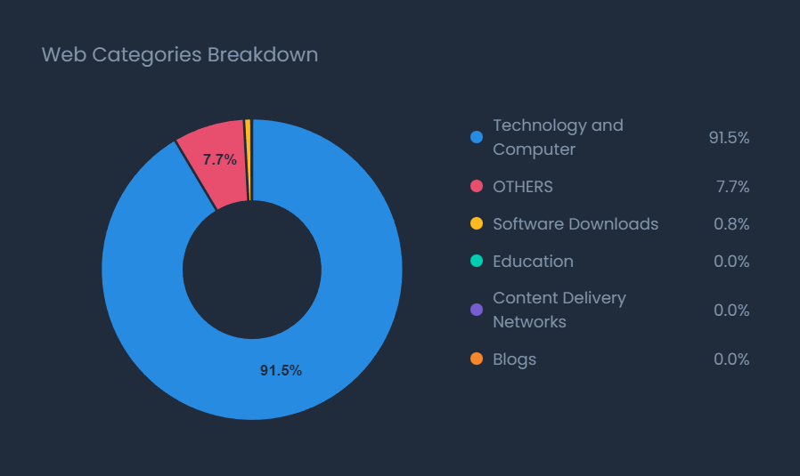
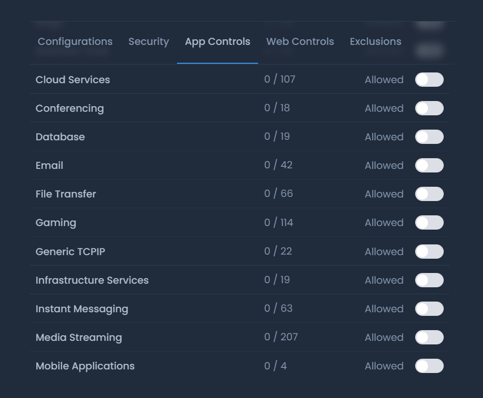
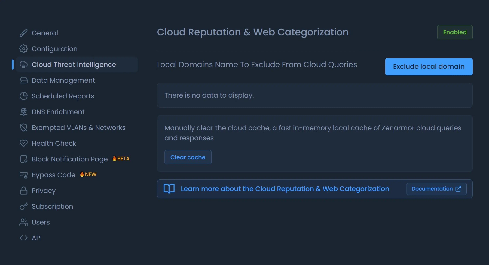
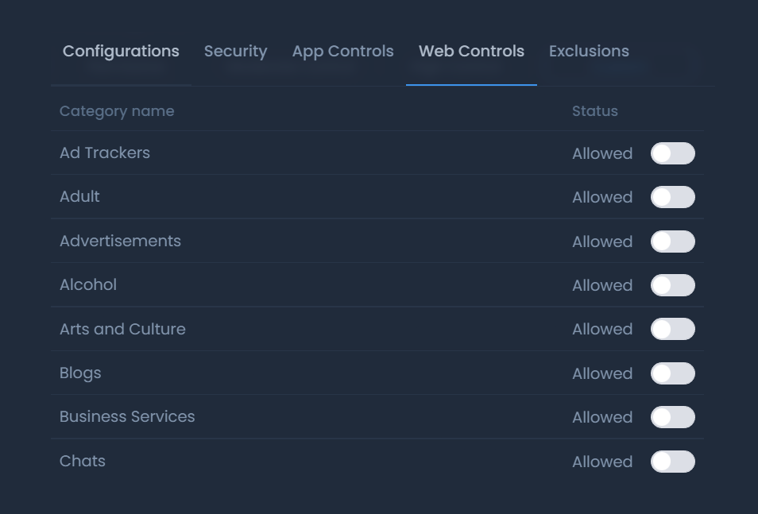

Layer 7 application control, TLS inspection, and real-time cloud-delivered threat intelligence that installs in minutes on OPNsense, turning it into an enterprise security powerhouse.
Start Your Free TrialFree tier available. Most teams are filtering Layer 7 traffic the same day.
From traditional commercial appliances, to the open-source firewalls many teams have migrated to, to the modern NGFW layer that brings them up to today's standard.
Fortinet, Cisco, SonicWall, consumer routers
A modern, open-source firewall
The full modern NGFW stack
✓ Full · △ Possible with DIY effort · ✕ Not available
Enterprise-grade next-gen firewall capability, deployed in minutes. Choose from an OPNsense plugin, or alongside the firewall you already operate. No new hardware. No rip-and-replace.
Deep packet inspection that sees inside encrypted traffic. Identify and control thousands of applications and protocols, even when they ride on port 443. Certificate-based or full TLS inspection catches malware and evasive threats other firewalls miss.

Allow Microsoft 365 but block consumer Dropbox. Throttle streaming on guest VLANs. Per-user, per-group, per-app policy.

Live feeds for malicious IPs, domains, phishing, C2, and crypto-jackers. Everything is updated continuously, no manual rules.

120+ URL categories, SafeSearch enforcement, and policy-based filtering across 300M+ sites. A perfect fit for K-12, healthcare, MSP, and enterprise alike.

* Basic TLS Inspection is included. Full TLS Inspection requires an SSE license.
One site or fifty branches? Easily manage policy, view live traffic, and run forensics from a single Zenconsole. Real-time dashboards. Per-user reports. Exportable for audit and compliance.
Push consistent rules to every node, OPNsense or otherwise, from one console.
See top apps, users, threats, and bandwidth in real time.
PDF and CSV exports for compliance, ops review, and customer billing.
<PLACEHOLDER> "We were already running OPNsense at every branch. Adding Zenarmor gave us the visibility and policy control we used to pay Fortinet for — without replacing a single box." </PLACEHOLDER>
— <PLACEHOLDER> Network Architect, Regional MSP </PLACEHOLDER>
What OPNsense teams are saying
<PLACEHOLDER> "Zenarmor gave our OPNsense boxes the Layer 7 visibility we'd been missing. We finally see what every device on the network is actually doing." </PLACEHOLDER>
<PLACEHOLDER> Senior Network Engineer, Mid-Market Manufacturing </PLACEHOLDER>
<PLACEHOLDER> "We swapped out a five-figure Fortinet renewal for OPNsense + Zenarmor. Same controls, real-time threat intel, and we kept the hardware we already owned." </PLACEHOLDER>
<PLACEHOLDER> IT Director, Regional Healthcare Provider </PLACEHOLDER>
<PLACEHOLDER> "Install was a single command. By the end of the afternoon we were filtering, reporting, and pushing policy to every branch from one console." </PLACEHOLDER>
<PLACEHOLDER> MSP Owner, Pacific Northwest </PLACEHOLDER>
Yes. Zenarmor Free Edition is available at no cost for home labs and small networks, with core app control and basic filtering included.
Zenarmor is engineered for line-rate inspection on modest hardware. Sizing guidance is published for everything from a Protectli to multi-Gbps appliances.
Zenarmor installs as a one-command plugin on current OPNsense stable releases, and is also supported on a range of other deployment targets including bare-metal Linux, virtual machines, and cloud workloads.
Zenarmor supersedes most DIY stacks with a single integrated engine: L7 app control, threat intel, content filtering, and reporting, all managed from one UI.
Yes. Zenconsole lets you push policy, view analytics, and run reports across every connected node from one place, whether you have one site or fifty.
Install takes minutes on OPNsense or your platform of choice. Free tier available.
Start Your Free Trial